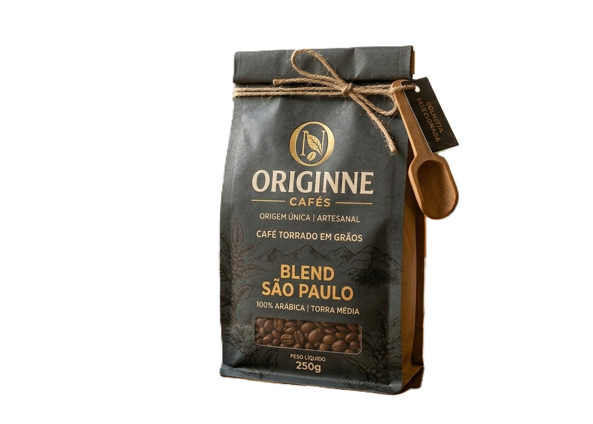
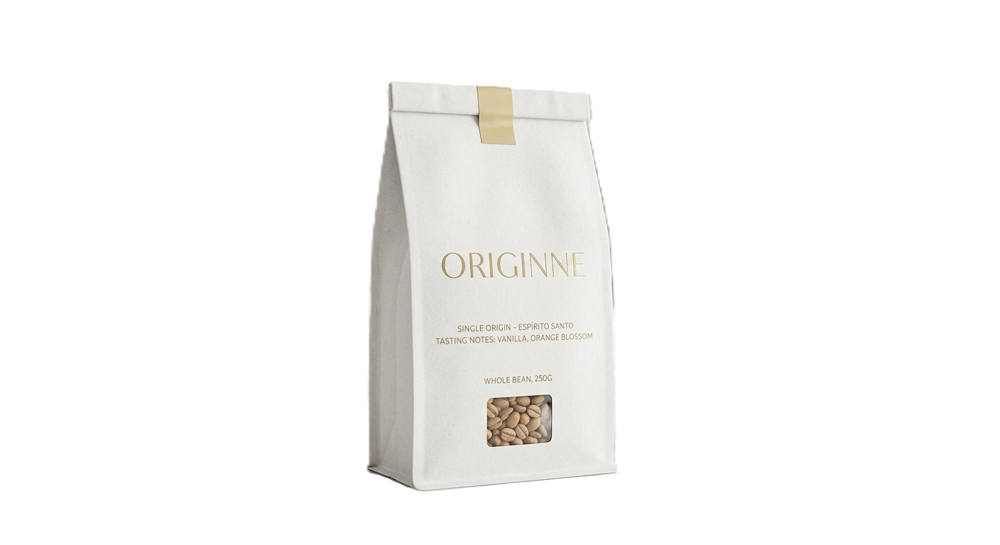
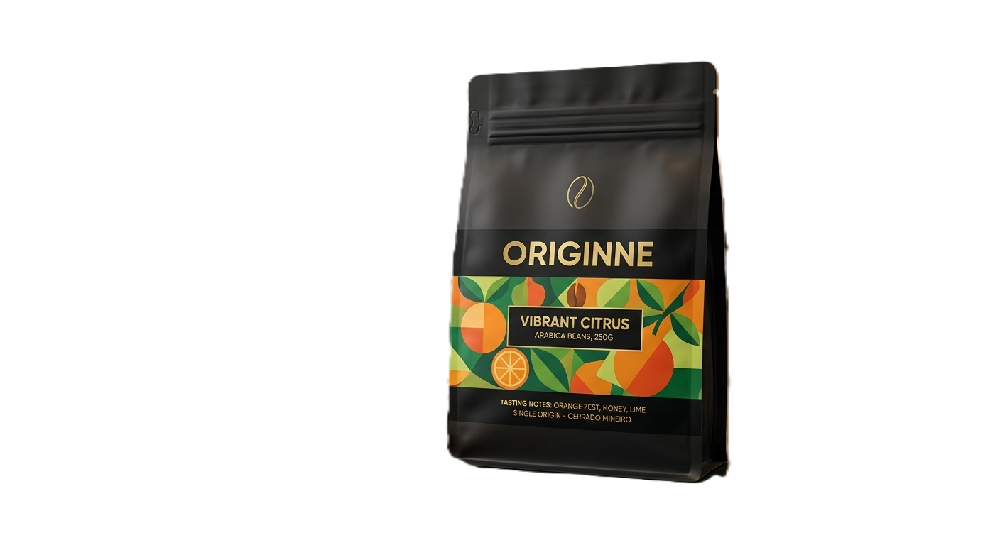

Mogiana Paulista
R$35,00 (250g)
- Notas de Chocolate e Castanhas
- Equilibrado

Sua jornada pelo café especial começa aqui. Combinamos grãos selecionados das melhores fazendas com um processo artesanal de torra para entregar frescor e intensidade em cada xícara. Descubra o que torna a Originne única.
Descubra a Origem
Na Originne, acreditamos que o café não é apenas uma bebida, mas o ponto de encontro entre a terra e o paladar. Nascemos da paixão pela busca do grão perfeito, respeitando o tempo da natureza e a dedicação de quem planta. Cada xícara conta uma história: desde a altitude das montanhas até a precisão da nossa torra artesanal. Nossa missão é despertar seus sentidos e transformar seu ritual diário em uma experiência sensorial única.


